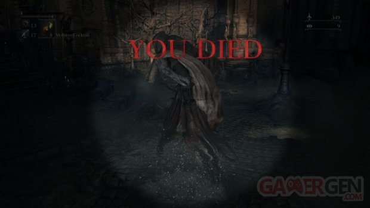
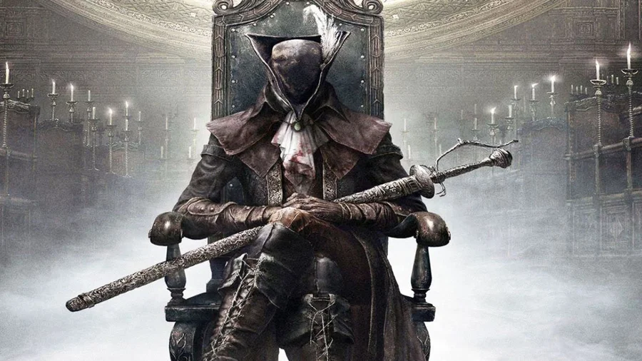

Bloodborne est un jeu de rôle et d'action (Action-RPG) développé par FromSoftware, dirigé par Hidetaka Miyazaki et sorti en 2015 sur PlayStation 4.
Le jeux étant une exclusivité ps4, est resté pendant longtemps innacesible aux joueurs.euses des autres médias (pc, xbox,...), hors la demande pour ce jeux était réel, en effet il fait partie d'une série de jeux les "Souls/Borne" acclamé par la critique tant les joueurs que la presse spécialisé.
Malheuresement et aux plus grand damn des joueurs.euses leurs demandes ont été ignorés les privant de ce fameux écran.

11 ans après la sortie du très populaire de Bloodborne et à force d'expérimentations et de tâtonnements, des fans l'ont enfin rendu jouable nativement sur PC.

Le portage natif de Bloodborne sur PC, créé par des moddeurs, est une forme d'émulation téléchargeable et installable relativement facilement sur GitHub et en suivant les instructions. Cette version offre non seulement une meilleure résolution et de meilleures performances que la version originale sur PS4 (y compris par rapport à une lecture sur PS5), mais il propose également une multitude de fonctionnalités exclusives et d'améliorations absentes de la version de 2015. Voici quelques-uns de ses meilleurs atouts :
Le refus d'un portage officiel ou d'un remake de bloodborne, à conduit les plus grand fans du jeux à ouvrir de nouvelles voix pour rendre le jeux jouable à un plus grand nombre, lui offrant par la même une seconde jeunesse.Ce qui à mon grand plaisir ma enfin permis de découvrir un jeux qui pendant longtemps m'était innacessible.